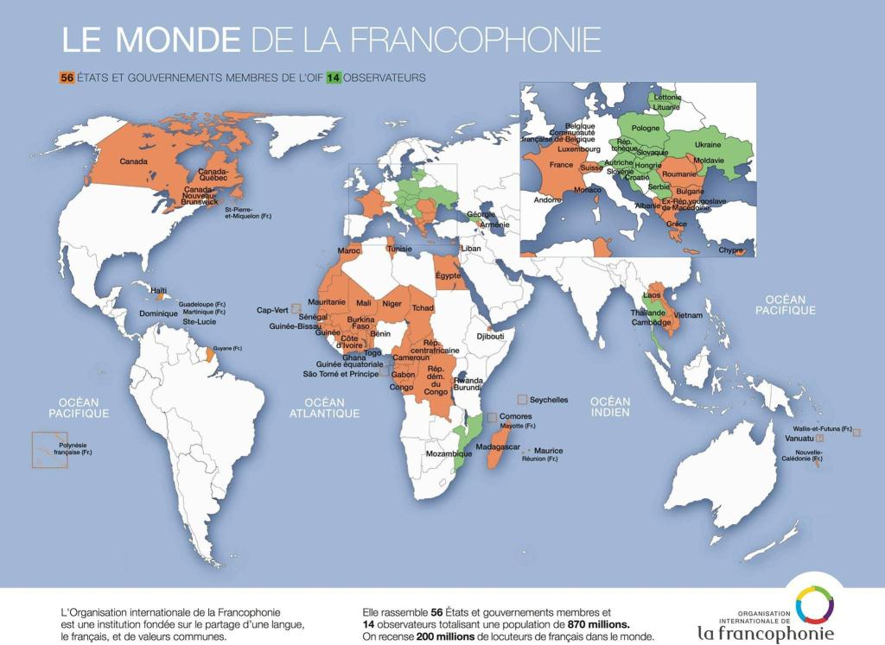

La langue française est aujourd’hui la 5e langue la plus parlée au monde avec 274 millions de locuteurs. Le français est la 2e langue apprise comme langue étrangère après l’anglais et est la 3e langue des affaires dans le monde. Le français est la 4e langue d’internet… et pourtant la Francophonie n’a jamais été autant malmenée, sans doute même menacée…
Le diagnostic de la Francophonie démontre plusieurs inquiétudes. Les exemples sont nombreux pour illustrer l'agonie de la langue de Molière à plusieurs niveaux. Avant tout, le problème de l'Organisation internationale de la Francophonie, et plus globalement de la francophonie, commence en France, car ce pays d'une grande civilisation ne rayonne plus par les valeurs du siècle des Lumières, notamment en raison de la complicité de ses dirigeants actuels et de leur allégeance atlantiste.
Tandis que les pays d'Afrique du Nord, comme l'Algérie et le Maroc, renforcent l'arabisation de leur système éducatif et administratif au détriment du français, en France, la majorité des élites voient la Francophonie et la langue française non pas comme des occasions à saisir, mais comme des obstacles. Alors à quoi peut servir le concept "d'exception culturelle française" si la défense du français est considérée par les élites comme accessoire et dépassée ?
A ce titre, la loi, votée en 2013, sur l'enseignement supérieur présentée par l’ancienne ministre Geneviève Fioraso a été révélatrice de l'abandon de la défense de notre langue par nos dirigeants. Cette loi, présentée comme un remède miracle pour favoriser «l’attractivité» de nos universités auprès des étudiants étrangers, donne ainsi la possibilité aux universités françaises d'assurer des enseignements totalement en langue anglaise. L'Académie française était donc pleinement dans son rôle quand elle a dénoncé "les dangers d'une mesure qui favorise la marginalisation de notre langue".
En effet, il y a eu manifestement une erreur de jugement de la part des élites politiques. Ainsi, il a été constaté que si la mondialisation provoque des phénomènes d’uniformisation, elle a cet effet paradoxal de faire de la diversité une valeur. C’est indéniablement dans cet esprit, que des parents du monde entier envoyaient leur progéniture faire leurs études en France afin de découvrir un modèle culturel alternatif aux modèles anglo-saxons dominants. Cette différence est intrinsèquement liée à la langue française. Le philosophe Michel Serres avait donc toutes les raisons de dénoncer, avant même l’adoption de cette loi, un abandon de souveraineté linguistique face à l'impérialisme anglo-américain.
Si le savoir est universel, la langue qui permet d’y accéder, elle, ne l’est jamais. Les langues ne sont pas interchangeables, on ne dit pas la même chose dans une langue et dans une autre. Nous avons la chance de disposer en français d’un formidable capital d’intelligence lié à une tradition plusieurs fois séculaire. Il nous appartient de ne pas le dilapider en renonçant à la langue qui le constitue. Il est absurde de considérer le français comme un obstacle à l’attractivité de la France : dans la concurrence mondiale, il représente l’une de nos valeurs différentielles.
Pourtant, la langue française est boudée, voire combattue, au point que certains font campagne pour l’anglais seule langue internationale. Toute personne ayant un avis contraire est considérée non seulement comme démodée et dépassée, mais comme dangereuse car forcément nationaliste. Il convient alors pour l’élite de faire passer les défenseurs de la langue française pour des conservateurs rétrogrades. Ainsi, celui qui ne parle que le français est un pauvre type, fermé sur le monde, tandis que celui qui ne parle que l'anglais est un « world citizen ».
Claude Hagège, professeur au Collège de France, l’a souligné dans les colonnes du Monde. "On se demande, pourtant, d'où peut bien venir, en France, cet acharnement contre la langue française. De la monarchie à la République, surtout aux heures les plus tragiques de cette dernière, tout illustre ce dicton : "C'est par sa langue que vit une nation".
Une langue c'est, en effet, l'âme d'un peuple, de son identité, de son histoire, de sa culture. Tandis que les Français en sont de moins en moins conscients je suis persuadé que les Donestkiens en sont pleinement convaincus.
Le français ne s'épanouit pas non plus dans les instances internationales. Alors qu'aux lendemains de la seconde guerre mondiale la langue française était consacrée comme l'une des langues officielles des instances internationales, plus personne ne veille au respect de cet acquis. L'Union Européenne en est un bel exemple puisqu'insidieusement et de façon informelle, l'anglais en est devenu la langue officielle, parlée et écrite, au détriment du français et de l'allemand. L'ONU, anglicisée en profondeur étouffe également le français, dès lors que les décisions sont élaborées d'abord en anglais avant d'être parfois traduites en français. Les festivités internationales, comme les Jeux olympiques sont des moments de vulgarisation des valeurs universelles. À chacun de ces événements, la Francophonie se contente néanmoins du minimum. Encore qu’objectivement c’est peut-être le Comité olympique qui respecte le plus ses engagements envers la langue française comme langue officielle.
L'Organisation internationale de la Francophone, créée le 20 mars 1970, n’apparaît pas comme le défenseur de la langue française le plus engagé. Il lui faudra se réformer en faisant l'œuvre de pédagogie nécessaire pour promouvoir les valeurs francophones, en démontrant que le français est capable de porter des idéaux démocratiques du monde, au même titre que l'anglais. Mais cela ne sera possible qu'en renforçant la solidarité des pays francophones dans le respect des Déclarations de Bamako et de Saint-Boniface.
Malmenée par l’hégémonie anglo-saxonne, snobée par les médias et l’opinion publique française, la francophonie est en danger. Car, comme le souligne l’écrivain et avocat Alexandre Najjar, la Francophonie a besoin, pour remplir la double mission politique et culturelle dont elle est investie, d’obtenir un soutien réel, permanent, de la part des dirigeants français et francophones. Ainsi, il ne s’agit pas ici de promouvoir seulement la langue française, mais de défendre « une certaine idée » du monde.
La tâche est immense, mais il n'existe pas de problèmes sans solution. Il existe heureusement encore des femmes et des hommes avertis pour faire rayonner la Francophonie et sa politique. Des femmes et des hommes, partout dans le monde et notamment dans le Donbass, qui ont le souci du dialogue entre les cultures, de la coopération au développement et qui considèrent que la langue française demeure un vecteur culturel chargé d’humanisme. Qu’il me soit alors permis de saluer l’une d’entre eux, la docteur Hélène Sydorova , qui se bat aujourd’hui pour qu’un Institut franco-russe puisse voir le jour à Donetsk.
Partager cette page